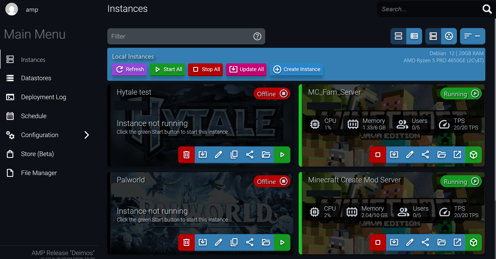
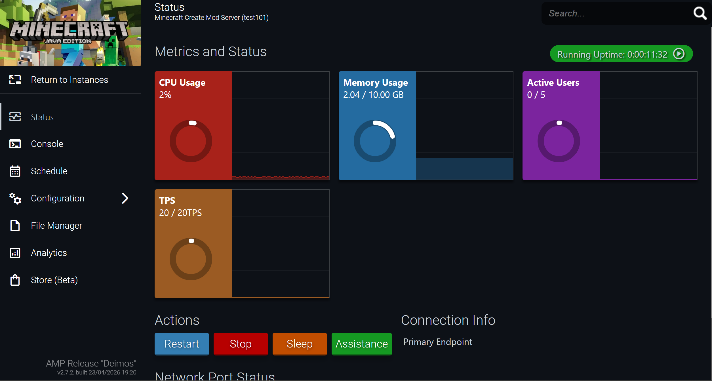

Die Hardware
Als Basis für meinen AMP Game Panel Server nutze ich denselben HP Mini PC wie für Proxmox – ein AMD Ryzen 5 PRO 4650GE mit 32GB RAM. AMP läuft als LXC Container direkt unter Proxmox, wodurch es die Hardware effizient mit anderen Diensten teilt ohne eine eigene VM zu benötigen.
Was ist AMP Game Panel?
AMP (Application Management Panel) ist ein Web-Interface zur Verwaltung von Game Servern. Statt sich per SSH einzuloggen und Befehle manuell einzugeben, bietet AMP eine übersichtliche Oberfläche um Server zu starten, stoppen und zu konfigurieren. Für jeden Game Server wird eine eigene Instanz angelegt – mit Live-Metriken wie CPU-Auslastung, RAM-Verbrauch, aktive Spieler und TPS (Ticks per Second). Aktuell laufen bei mir zwei Minecraft Server, ein Palworld Server und ein Hytale Test-Server als Instanzen.

Das Amp Web-Interface – zum Vergrößern klicken
Installation
AMP wird als LXC Container in Proxmox eingerichtet. Nach dem Erstellen eines Debian-Containers
wird AMP über ein offizielles Installationsskript eingerichtet. Das Panel ist danach über den
Browser unter https://IP-ADRESSE:8080 erreichbar und führt beim ersten Start durch die
Grundkonfiguration. Neue Game Server lassen sich dann mit wenigen Klicks als Instanz
hinzufügen – AMP lädt die Server-Dateien automatisch herunter und konfiguriert Ports
und RAM-Limits.

Das Amp Web-Interface in einer Instanz – zum Vergrößern klicken
Port Forwarding mit Playit.gg
Damit Freunde von außen auf die Game Server zugreifen können, braucht man normalerweise
Port Forwarding am Router – was bei vielen Internetanschlüssen entweder nicht möglich oder
zu kompliziert ist. Als Lösung nutze ich Playit.gg, einen kostenlosen Tunnel-Dienst speziell
für Game Server.
Playit läuft als kleines Programm im Container und erstellt einen öffentlichen Endpunkt,
über den Spieler sich verbinden können – ohne dass der Router angefasst werden muss.
AMP verwaltet den Server, Playit macht ihn von außen erreichbar. Die Kombination funktioniert
zuverlässig und ist auch für Anschlüsse ohne feste IP oder mit CGNAT geeignet.
Nächste Schritte
Der nächste geplante Dienst in meinem Homelab ist Home Assistant – eine Open-Source Plattform zur Heimautomatisierung. Home Assistant läuft ebenfalls gut als LXC Container unter Proxmox und erlaubt es, Smart-Home-Geräte zentral zu steuern und zu automatisieren, ohne auf Cloud- Dienste angewiesen zu sein. Die Einrichtung und erste Automatisierungen werde ich hier dokumentieren.